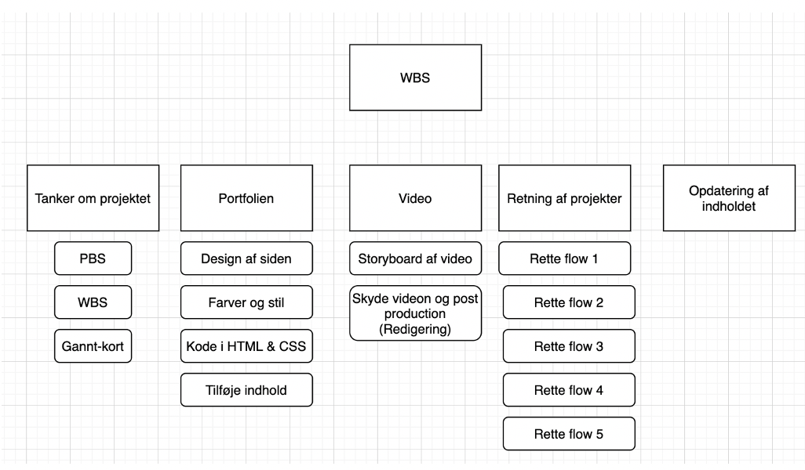
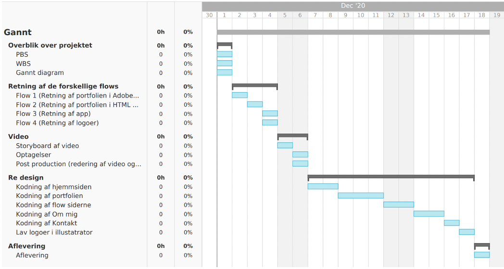
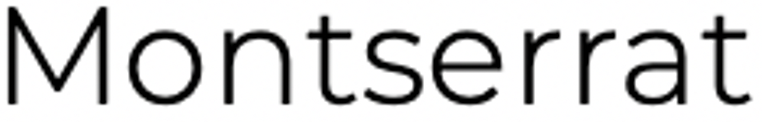
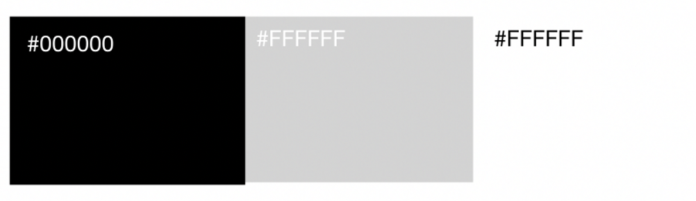
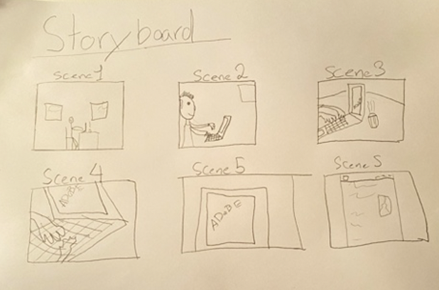

I eksamens projektet skulle man lave et komplet redesign af ens portfolie og med indhold fra hvert flow i første semester. Siden skal fungere som et udstillingsvindue, og skal også vise hvem du er som person. Derudover skulle der også indgå en videosekvens.
Derefter lavede jeg en WBS, hvilket er utrolig vigtigt for processen, da denne model giver overblik over hvilke opgaver, som skal nås, og hvordan du skal kordinere din tid angående projektet. Denne kan ses nedenunder.
Der blev også lavet et Gannt diagram, som viser hvornår de forskellige opgaver skal være løst.
Mine tanker omkring min portfolie er, at det skal være en udstilling af mine projekter, som jeg har udrettet under uddannelsen. Derudover skal man også have muligheden for at lære mig at kende igennem skrift og en præsentionsvideo.
Det skal også være muligt at kontakte mig igennem siden af mulige kunder, hvilket også er den primære målgruppe for siden.
Mine primære tanker bag min hjemmeside var, at den skal være brugervenlig, og der skal ikke være nogen tvivl om hvad budskabet er. Jeg besluttede mig dermed for at lave et minimalistisk design med fokus på enkelthed, hvilket også er blevet en trend inden for de seneste år. Et minimalistisk design gør det også nemmere for brugeren at finde frem til det ønskede.
Navigationen er også enkel på siden, og brugeren bliver ikke overvældet med valg, og dermed kun enkelte muligheder. På forsiden har jeg valgt at indsætte videoen, da man dermed som det første kan ”møde” mig som person, og hvad jeg kan tilbyde.
Før jeg begyndte at designe min hjemmeside, så testede jeg mit site fra flow 2 på 4 personer. Nogle mente at hjemmesidens menu skulle være øverst i stedet for i højre side. Derudover syntes folk også, at den manglede lidt struktur i opsætningen. Disse ændringer tog jeg til mig, og besluttede mig derfor med, at lave en helt ny side med nye tanker.
Inden jeg begyndte at kode hjemmesiden, så lavede jeg en prototype af hvordan jeg gerne ville have den skulle designes, og dette skete i Adobe XD. Her var det muligt at udvikle forskellige ideer om designet på en håndgribelig måde, da det er en hurtig måde at arbejde på. Jeg synes, at det er nemmere at teste ideer i den tidlige fase. Min prototype kan ses her.
Jeg har valgt at bruge skrifttypen Montserrat, hvilket er en populær skrifttype. Det er en meget neutral og moderne skrifttype, som kan bruges i mange forskellige sammenhænge. Personligt så synes jeg denne skrifttype har mere karakter end de traditionele skrifttyper herunder Arial og Helvetica.
Jeg har primært gjort brug af farverne Grå, sort og hvid (#000000, #FFFFFF og #D3D3D3). Denne kombination af farver er meget tidsløs. Jeg valgte at gøre baggrundsfarven hvid, da dette er en neutral farve, som symbolisere klarhed, og dermed er der ikke meget, som irriterer øjet. En simpel baggrundsfarve er et trend i dagens Danmark, og den hvide baggrund er indbegrebet af simpel. Det er også en god måde, og undgå at min hjemmeside bliver for rodet. Teksten er sort, og det synes jeg altid fungere, og er ikke anstrengende at se på.
Hele sitet er kodet ved hjælp af HTML & CSS, hvilket jeg synes er gået utrolig godt. Jeg synes, at jeg har lært meget, og har nu en meget bedre forståelse for kodning. Tryk her for link til GITHUB. Jeg har brugt et enkelt stylesheet til alle mine html filer, hvilket har fungeret helt fint. Jeg har primært brugt div bokse i min kode, og primært flyttet elementer rundt med float og margin, hvilket også har fungeret helt fint. Jeg har haft enkelte problemer med, at gøre siden fuldstændig responsive, og siden er derfor kodet til en Macbook med en 13" skærm. Men, dette er noget som skal fungere i fremtiden. Link til Github
Jeg er også forholdsvist tilfreds af det færdige resultat af hjemmesiden. Kontaktfomularen virker dog ikke, da vi ikke har lært dette endnu på studiet, men mit mål er, at den skal kunne fungere i den nærmeste fremtid.
Jeg startede ud med at lave et storyboard, så jeg havde en ide hvordan den fulde video skulle se ud. Derudover fik jeg også et overblik over hvilke kameravinkler jeg skulle bruge. Jeg mindskede tidsforbruget ved at benytte dette storyboard med hensyn til redigeringen.
I post-production har jeg gjort brug porgrammerne Adobe Premier & After Effects. Titlen og outroen er redigeret i After Effects, og klipningen er sket i Premier. Jeg har også gjort brug af colourgrading for at forstærke stemningen i klippene, og få alle klippene til at se ens ud. Under videoen har jeg brugt min stemme, som voice-over, og dette har givet mig mulighed for, at forklare detaljer, der kan være svære at udtrykke visuelt.
Jeg har også tilføjet lidt baggrundmusik for at underbygge handlingen. Derudover har jeg også brugt få effekter så som fade in/fade out, slide left og zoom effect, da det kan give en bedre overgang.
Jeg har bevidst gjort brug af enkelte filmiske virkemidler, som hjælper med at skabe stemningen i videoen. Synsvinklerne i videoen har forskellige synsvinkler herunder bla. et klip i frøperspektiv, og det har jeg brugt, da det typisk betyder personen er stærk, og i denne situation kan det betyde, at jeg har styr på området.
Derudover har jeg også benyttet beskæringer så som total (ser mig i fuld person), halvnær (kan se mine ansigtsudtryk) og nærbillede (fremhæver kaffekoppen og bogen).
Jeg har testet mit nye site for 4 personer, og de har delt nogle tanker med mig. Alle personerne syntes, at hjemmesiden var enkel og brugervenlig, og de havde generelt nemt ved at navigere rundt. Videoen var ifølge nogle for lille på forsiden, og nogle synes det var en smule irriterende, at videoen var uploaded på Youtube, og der derfor kom ”Related videos” frem, når videoen var færdig. Derfor lagde jeg videoen ind i min mappe med html og css filer, og så uploadet den igennem der. Der blev også kommenteret på logoet, og en person mente, at det var for småt.
Jeg rettede derefter hjemmesiden til efter folks kommenterer.